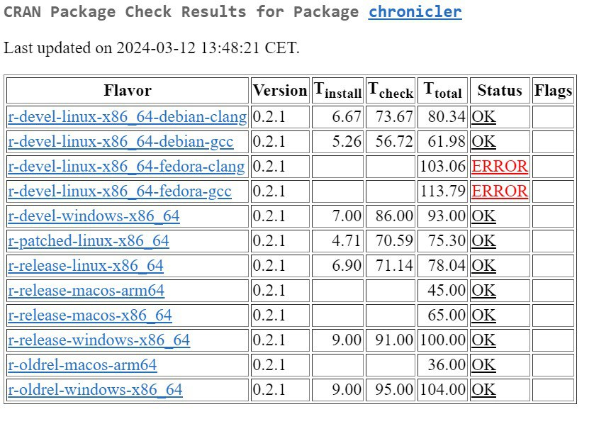
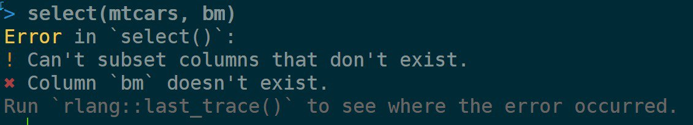
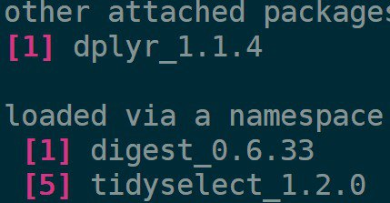
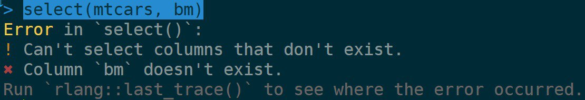
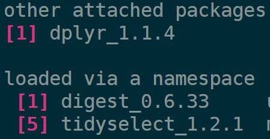

Reproducible data science with Nix, part 11 – build and cache binaries with Github Actions and Cachix
Intro
I have this package on CRAN called {chronicler} and last month I got an email from CRAN telling me that building the package was failing, and I had two weeks to fix it.
I immediately thought that some dependency that my package depends on got updated, and somehow broke something. But when I checked the results of the build, I was surprised, to say the least:

How come my package was only failing on Fedora? Now that was really weird. There was no way this was right. Also, I couldn’t reproduce this bug on my local machine… but I could reproduce it on Github Actions, on Ubuntu (but it was ok on CRAN’s Debian which is really close to Ubuntu!), but couldn’t reproduce it either on Windows! What was going on? So I started digging, and my first idea was to look at the list of packages that got released on CRAN on that day (March 12th 2024) or just before, and saw something that caught my eye: a new version of {tidyselect} had just been released and even though my package doesn’t directly depend on it, I knew that this package was likely a dependency of some direct dependency of {chronicler}. So I looked into the release notes, and there it was:
* `eval_select()` out-of-bounds errors now use the verb "select" rather than
"subset" in the error message for consistency with `dplyr::select()` (#271).
I knew this was what I was looking for, because the unit test that was failing to pass was a test that should error because dplyr::select() was being used on a column that didn’t exist. So the success of that test was defined as finding the following error message in the log, which contained the word subset but now it should be select.
But why was this failing only on Fedora on CRAN and on Ubuntu on Github Actions (but ok on Debian on CRAN)? And why couldn’t I reproduce the bug on my OpenSuse Linux computer, even though I was building a bleeding edge development environment using Nix?
And then it hit me like my older brother used to.
When building packages, CRAN doesn’t seem to use pre-compiled binaries on Fedora, so packages get built from source. This means that it takes longer to test on Fedora, as packages have to be built from source, but it also means that only the very latest releases of packages get used. On other platforms, pre-compiled binaries get used if available, and because {tidyselect} had just come out that very day, older binaries of {tidyselect} were being used on these platforms, but not on Fedora. And because these older binaries didn’t include this change, the unit test was still passing successfully on there.
On Github Actions, code coverage was computed using covr::codecov() which installs the package in a temporary directory and seems to pull its dependencies directly from CRAN. Because CRAN doesn’t offer Linux binaries packages got compiled from source, hence why the test was failing there, as the very latest version of {tidyselect} was being used (btw, use Dirk Eddelbuettel’s r2u if you binaries for Ubuntu).
And on my local machine, even though I was using the latest commit of nixpkgs to have the most bleeding edge packages for my environment, I had forgotten that the R packages on nixpkgs always lag behind the CRAN releases.
This is because R packages on nixpkgs tend to get updated alongside a new release of R, and the reason is to ensure a certain level of quality. You see, the vast majority of CRAN (and Bioconductor) packages are made available through nixpkgs in a fully automated way. But some packages do require some manual intervention to work on Nix. And we only know this if we try to build these packages, but building packages requires quite a lot of resources. I go into more detail here, but in summary we can’t build CRAN packages every single day to see if everything works well, so we only rebuild the whole tree whenever there’s a new release of R. Packages get built on a CI infrastructure called Hydra, and then get cached on cache.nixos.org so whenever someone wants to install a package, a pre-built binary gets pulled from the cache instead of getting installed from source. For packages that don’t need compiling this is not that big of a time save, but for packages that do need to get compiled it is huge. Depending on which packages you want to install, if you had to build everything from source, it could potentially take hours, but if you can install pre-built binaries it’s just a matter of how quick your internet connection is.
Anyways, I went back to my fork of nixpkgs and updated the expression defining the CRAN packages myself and installed the latest versions of packages from my fork.
Before the update, this was the error message I was testing against:

and this was on version 1.2.0 of {tidyselect}:

but after the update, this was the error message:

on version 1.2.1 of {tidyselect}:

so I found the issue, and updated my unit testing accordingly, and pushed the update to CRAN. All is well that ends well, but… this made me think. I needed to have an easy way to have bleeding edge packages on hand from Nix at all moments, and so I started working on it.
Github Actions to the rescue
As described in my previous blog post updating the Nix expressions defining the R packages on nixpkgs involves running an R script that generates a Nix expression which then builds the R packages when needed. So what I did was create a Github actions that would run this R script every 6 hours, and push the changes to a branch of my nixpkgs fork. This way, I would always have the possibility to use this branch if I needed bleeding edge packages. Because this can be of interest to others, Philipp Baumann started a Github organisation hosting this fork of nixpkgs that gets updated daily which you can find here. Because this action needs to run several times a day, it should be on a schedule, but actions on a schedule can only run from master/main. But that’s not what we wanted, so instead, we are using another action, on another repository, that pushes a random file to the target repository to get the action going. You can find this repository here with complete instructions. So to summarise:
-
An action on schedule runs from b-rodrigues/trigger-r-updates and pushes a file to rstats-on-nix/nixpkgs on the
r-daily-sourcebranch -
This triggers an action that updates all of
nixpkgs, including R packages, and pushes all the updates to ther-dailybranch (you can find it here) -
We can now use the
r-dailybranch to get bleeding edge R packages on Nix!
This happens without any form of testing though, so packages could be in a broken state (hey, that’s the definition of bleeding edge, after all!), and also, if anyone would like to use this fork to build a development environment, they’d have to rebuild a lot of packages from source. Again, this is because these packages are defined in a fork of nixpkgs and they don’t get built on Hydra to populate the public cache that Nix uses by default. So while this fork is interesting because it provides bleeding edges packages, using it on a day-to-day basis can be quite tedious.
And this is where Cachix comes into play.
Setting up your own binary cache on Cachix
Cachix is an amazing tool that makes it incredibly easy to set up your own cache. Simply build the packages once, and push the binaries to the cache. As long as these packages don’t get updated, they’ll get pulled from the cache instead of getting rebuilt.
So now, here is what I do with my packages: I define a default.nix file that defines a development environment that uses my fork of nixpkgs as the source for packages. For example, here is this file that defines the environment for my {rix} package. I can use this environment to work on my package, and make sure that anyone else that wants to contribute, contributes using the same environment. As you can see on line 2, the rstats-on-nix bleeding edge fork gets used:
pkgs = import (fetchTarball "https://github.com/rstats-on-nix/nixpkgs/archive/refs/heads/r-daily.tar.gz") {};
Then, still on {rix}’s repository, I define a new action that builds this environment periodically, but using the binary cache I set up with Cachix. You can find this action here. So the r-daily branch of our nixpkgs fork gets updated every 6 hour and this environment gets updated every 12 hours, 30 minutes past the hour.
Now, every time I want to work on my package, I simply use nix-build on my computer to update the development environment. This is what I see:
copying path '/nix/store/0l0iw4hz7xvykvhsjg8nqkvyl31js96l-r-stringr-1.5.1' from 'https://b-rodrigues.cachix.org'...
copying path '/nix/store/cw3lc7b0zydsricl5155jbmldm1vcyvr-r-tibble-3.2.1' from 'https://b-rodrigues.cachix.org'...
copying path '/nix/store/y32kpp09l34cdgksnr89cyvz6p5s94z8-r-tidyselect-1.2.1' from 'https://b-rodrigues.cachix.org'...
copying path '/nix/store/sw24yx1jwy9xzq8ai5m2gzaamvyi5r0h-r-rematch2-2.1.2' from 'https://b-rodrigues.cachix.org'...
copying path '/nix/store/z6b4vii7hvl9mc53ykxrwks1lkfzgmr4-r-dplyr-1.1.4' from 'https://b-rodrigues.cachix.org'...
as you can see, packages get pulled from my cache. Packages that are already available from the usual, public, cache.nixos.org don’t get rebuilt nor cached in mine; they simply continue getting pulled directly from there. This makes using the development environment very easy, and guarantees I’m always mirroring the state of packages released on CRAN. The other interesting thing is that I can use that cache with other actions. For example, here is the action that runs the unit tests included in the package in an environment that has Nix installed on it (some unit tests need Nix to be available to run). On line 25 you can see that we install Nix and set our fork as the repository to use:
nix_path: nixpkgs=https://github.com/rstats-on-nix/nixpkgs/archive/refs/heads/r-daily.tar.gzand just below, we set up the cache:
- uses: cachix/cachix-action@v14
with:
name: b-rodrigues # this is the name of my cacheBy using my cache, I make sure that the test runs with the freshest possible packages, and don’t run the risk of having a test succeed on an outdated environment. And you might have noticed that I am not authenticating to Cachix: to simply pull binaries, to authentication is needed!
Cachix has a free plan of up to 5Gb which is more than enough to set up several development environments like this, and is really, really, easy to set up, and it works on your computer and on Github Actions, as shown. If you want to use this development environment to contribute to {rix}, check out the instructions on Contributing.md file.
You can use the same approach to always have development environments ready for your different projects, and I will likely add the possibility to use this fork of nixpkgs with my {rix} package.
Thanks to Philipp Baumann for nudging me into the direction of using Cachix and showing the way!